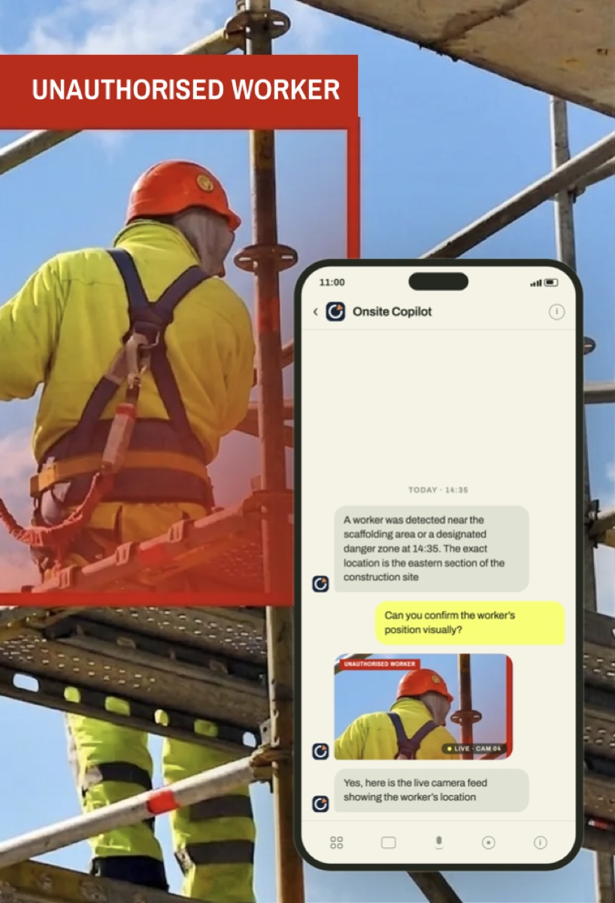
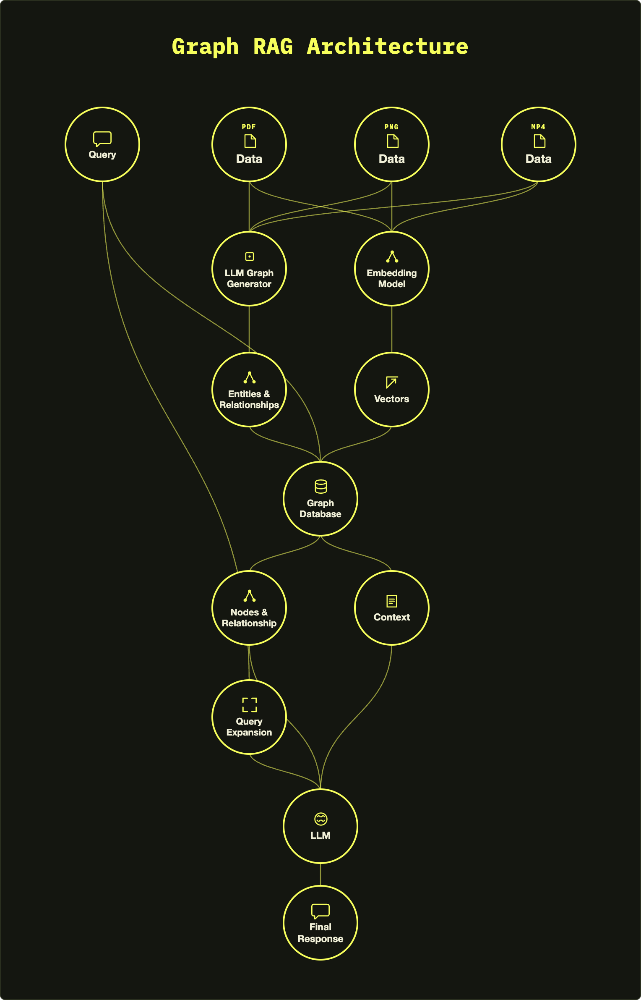

Onsite Copilot
Graph RAG, Fine-tuning, AI Chatbot, Frontend, UI Design
Onsite Copilot
2026
Machine Learning + SWE Intern
OnSite Copilot is an AI platform designed to bring real-time, agentic assistance to construction sites, helping project teams identify safety, scheduling, and coordination issues before they result in costly rework. I organized 1,000+ construction documents, pictures, and videos into hierarchical chunks and domain-specific knowledge graphs, linking related concepts and procedural relationships to improve contextual retrieval. I also developed query expansion methods that generate related questions, retrieve their corresponding child chunks, and recombine them with relevant context to improve RAG retrieval accuracy by 80%.
Challenge
As part of the AI engineering team at OnSite Copilot, I worked on improving the reliability of the platform's construction-domain reasoning. A key challenge was that generic RAG retrieval often surfaced relevant-looking passages without enough context, leading to incomplete or hallucinated answers when users asked specialized construction questions. I focused on building a retrieval system that could understand relationships across construction documents and return the right evidence for each query.
Approach
I first investigated how construction questions are naturally structured rather than immediately optimizing the existing retrieval pipeline. I focused on drywall installation as an initial domain and manually studied construction manuals, worksite images, and videos to identify recurring concepts, procedural dependencies, and common questions.
From this exploration, I found that relevant information was often distributed across multiple pieces of documentation: a question about one installation step could depend on material specifications, previous steps, or known failure modes. This led me to explore three complementary ideas: hierarchical chunking to preserve context at different levels, knowledge graphs to explicitly represent relationships between construction concepts, and query expansion to capture the different ways a user might ask about the same underlying concept.
Solution
I implemented a specialized RAG pipeline across 1,000+ construction documents and schedules. Documents were organized into parent and child chunks, with smaller chunks representing specific pieces of information while parent chunks preserved their broader context. I constructed a domain-specific knowledge graph connecting materials, procedures, requirements, defects, and workflow stages through relationships such as required_for, input_to, precedes, and governed_by.
For each real user query, the system generates semantically related questions, maps those questions to relevant child chunks, retrieves the corresponding information, and then recombines the child chunks with their parent context before passing the evidence to the LLM. This allows the system to retrieve complementary information across the knowledge base instead of relying on a single nearest-neighbor match.

Outcome
I evaluated the implemented pipeline against a baseline RAG system using standard semantic chunking and retrieval. Across 500 construction queries, each response was evaluated for whether its information was supported by the underlying construction sources or contained unsupported/hallucinated information. The resulting retrieval approach achieved an 80% improvement in response accuracy over the baseline.